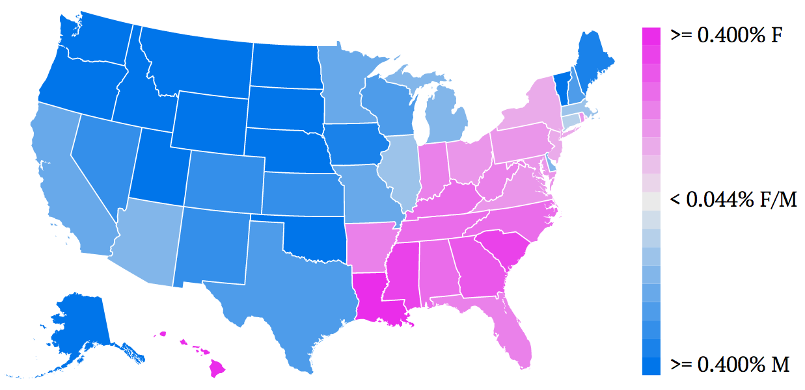
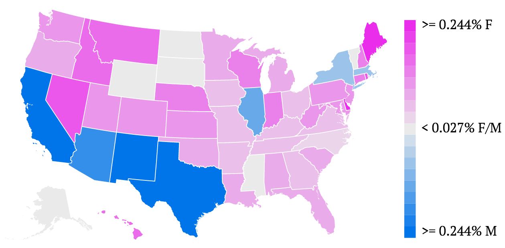
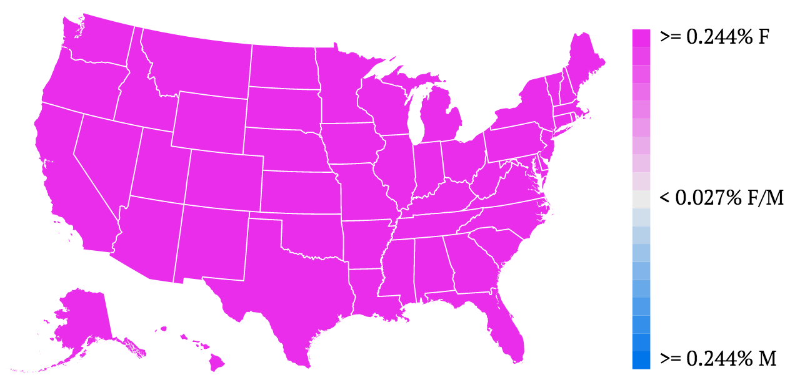

Interactive D3 Map of Baby Name Popularity
The map above is an iframe of baby-name-map.surge.sh, so the interactivity can be a little laggy. If you follow the link and play with it there, the map might respond faster when dragging the Year slider.
Using and Understanding this Map
To use the map above, select a name from the dropdown list (you should be able to type a name if you don’t want to scroll), then drag the slider to move in time between the years 1910 and 2014. The color hue (pink vs. blue) in each state tells you whether the name was more popular for baby girls or boys. The color tone (dark pink vs. light pink) corresponds to the name’s popularity among babies of that gender. “Popularity” is measured by the percentage of babies of either gender given that name.
For ideas on where to start, try out some of the more popular gender neutral names described in a FiveThirtyEight article such as Casey, Riley, Jessie, or Jackie. Or look at Jaime (also in that list) and see the popularity skyrocket in 1976, which turns out to be when The Bionic Woman aired on TV, portraying the adventures of a female cyborg spy named Jaime Sommers.
Why I Made This
- My wife and I recently had a baby, so I’ve been interested in baby name trends and wanted an interactive way to visualize them.
- I wanted to learn how to use D3, and Mike Bostock’s Quantile Chloropleth example caught my eye.
I’ll split my discussion of this project into 3 parts: the data prep part, the D3 part, and the playing with the map part.
The Data Prep Part
I wanted the map to respond quickly to moving the slider for any given name, but I didn’t want the browser to have to load in too much data at a time, so I decided to make a separate file for each name which contained all the data relevant to that name. The raw data, which I downloaded from Kaggle, (data download link here) needed to be processed a bit before my map could use it. An IPython Notebook using the pandas Python module was a great tool for this purpose. You can see my Notebook on GitHub. (I’m pretty excited that GitHub now renders the contents of IPython Notebooks by the way.)
I’ve been using Python (mostly numpy) for data analysis for a couple years now, but this was my first real introduction to pandas. I found the DataFrame.pivot_table() function particularly useful in this project. It allowed me to very easily create a dataframe with states as the rows and years as the columns out of a dataframe with a different row for each name.
The D3 Part
Creating the map using D3 wasn’t as difficult as I expected. It was mostly a matter of following along with Mike Bostock’s choropleth example. Scott Murray’s D3 Tutorials were also incredibly useful. I highly recommend them for anyone interested in checking out D3. The Javascript code used to generate the map can be seen here.
The Playing With the Map Part
The gender neutral names make the most interesting visualizations, so I looked through FiveThirtyEight’s list of the most popular gender neutral names.
Casey, the most popular one, is interesting because of how clean the male/female split was at some points. Here’s what it looked like in 1980:

Another interesting one was Jaime. Here’s the map for Jaime in 1975:

Just one year later, when The Bionic Woman aired on TV, everyone must have loved Jaime, the female cyborg spy because suddenly Jaime’s popularity among babies skyrocketed. Here’s the map for 1976:

If you see anything interesting with other names, go ahead and post below.